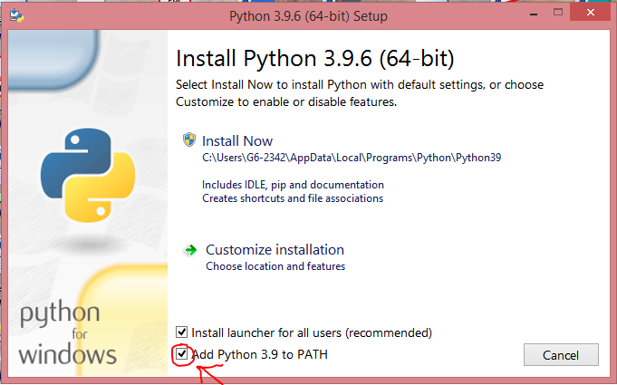

Accueil de Tomservice
Installer pip
(Windows)Installer pip
- Veuillez désisntaller Python de la même manière qu'un quelquonque autre logiciel
- Télécharger le setup de Python adapté à votre version de Windows ici
- Lors du démarrage du setup (en accoradant les droits d'administrateur) avant de continuer l'installation cocher "Ajouter PythonX.X dans le PATH"(voir image ci-dessous), puis continuer l'installation

- Terminer l'installation comme une installation normale
- Une fois l'installation terminé REDÉMARRER votre ordinateur!
- pip est opérationnel
(Linux)Installer pip
- Ouvrez le terminal
- Entrez
sudo apt install python3-pip puis validez
- Entrez votre mot de passe d'utilisateur (durant l'écriture du mot de passe sur Ubuntu, le curseur ne bouge pas pour cacher votre mot de passe)
- Patientez...
- pip est installé
(Mac OS)Installer pip
Nous recherchons volontiers des utilisateurs MAC :)
(Tout système confondus)Installer virtualenv
Virtualenv sert à créer des environnements virtuels Python (et donc inclure les modules Python non-standarts)
- Ouvrez l'invite de commande ou le terminal
- Entré "pip install virtualenv"
- Virtualenv est installé
(Tout système confondus)Installer des modules (exemple ici: keyboard)
Installer des modules python avec pip (exemple avec le module keyboard pour Jours Frais)
- Ouvrez le terminal ou l'invite de commande (pour ouvrir l'invite de commande, faites Windows+R puis entré cmd.exe et validez)
- (Sur Windows)Taper
pip install keyboard et validez!
(Sur Linux) Taper pip3 install keyboard et validez!
- Keyboard est installé
Pour installer un tout autre module, remplacez keyboard par le nom du module que vous voulez installer!